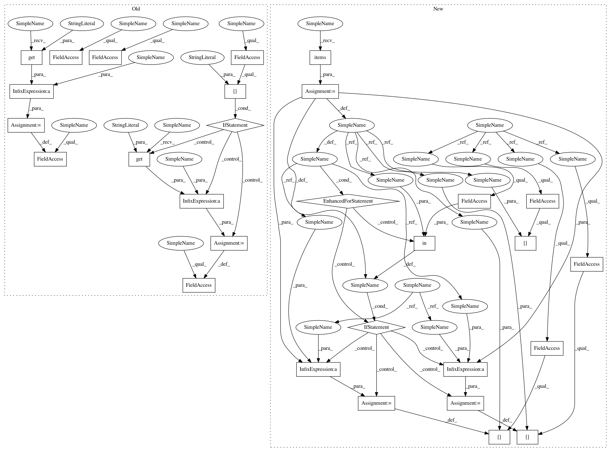

560cb94519ad5a5eed3adc323a9e1ad3cf0690e9,keras/callbacks.py,RemoteMonitor,on_batch_end,#RemoteMonitor#Any#Any#,255
Before Change
def on_batch_end(self, batch, logs={}):
batch_size = logs.get("size", 0)
self.seen += batch_size
self.tot_loss += logs.get("loss", 0.) * batch_size
if self.params["show_accuracy"]:
self.tot_accuracy += logs.get("accuracy", 0.) * batch_size
def on_epoch_end(self, epoch, logs={}):
import requests
logs["epoch"] = epoch
logs["loss"] = self.tot_loss / self.seen
After Change
self.totals = {}
def on_batch_end(self, batch, logs={}):
batch_size = logs.get("size", 0)
self.seen += batch_size
for k, v in logs.items():
if k in self.totals:
self.totals[k] += v * batch_size
else:
self.totals[k] = v * batch_size
def on_epoch_end(self, epoch, logs={}):
import requests
send = {}
send["epoch"] = epoch
In pattern: SUPERPATTERN
Frequency: 3
Non-data size: 29
Instances
Project Name: keras-team/keras
Commit Name: 560cb94519ad5a5eed3adc323a9e1ad3cf0690e9
Time: 2015-06-30
Author: francois.chollet@gmail.com
File Name: keras/callbacks.py
Class Name: RemoteMonitor
Method Name: on_batch_end
Project Name: keras-team/keras
Commit Name: 560cb94519ad5a5eed3adc323a9e1ad3cf0690e9
Time: 2015-06-30
Author: francois.chollet@gmail.com
File Name: keras/callbacks.py
Class Name: RemoteMonitor
Method Name: on_batch_end
Project Name: keras-team/keras
Commit Name: 560cb94519ad5a5eed3adc323a9e1ad3cf0690e9
Time: 2015-06-30
Author: francois.chollet@gmail.com
File Name: keras/callbacks.py
Class Name: BaseLogger
Method Name: on_batch_end
Project Name: keras-team/keras
Commit Name: 560cb94519ad5a5eed3adc323a9e1ad3cf0690e9
Time: 2015-06-30
Author: francois.chollet@gmail.com
File Name: keras/callbacks.py
Class Name: History
Method Name: on_batch_end